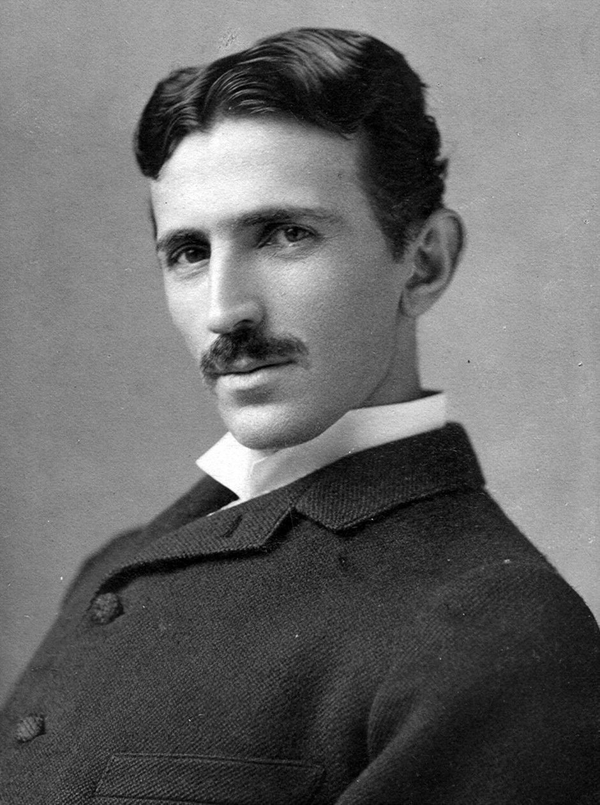

image gallery

Nikola Tesla was a Serbian-American inventor, electrical engineer, mechanical engineer, and futurist best known for his contributions to the design of the modern alternating current (AC) electricity supply system. Born on July 10, 1856, in Smiljan, Croatia, Tesla's work laid the foundation for many electrical technologies we use today.
Tesla was born into a Serbian family. His father was a priest in the Serbian Orthodox Church, and his mother was an inventor of household appliances. Tesla showed an early interest in electricity and pursued his education in engineering and physics at the Austrian Polytechnic in Graz and later at the University of Prague.
"The present is theirs; the future, for which I really worked, is mine."
"If you want to find the secrets of the universe, think in terms of energy, frequency and vibration."- Nikola Tesla